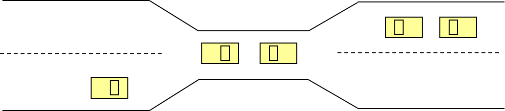

死锁
约 1381 个字 4 张图片 预计阅读时间 5 分钟
背景
跨桥问题

如图所示桥中央只能允许一辆交通工具通过，如果同时有双向来车则会堵在中间，破局方法是一些辆车后退。
描述
A set of blocked processes each holding a resource and waiting to acquire a resource held by another process in the set.
死锁是指多个进程因竞争共享资源而造成相互等待的一种僵局，若无外力，这些进程都将永远不能在向前推进。
死锁产生需要同时满足四个条件（死锁产生的必要条件）：
- Mutual exclusion（互斥条件）：同一时间只有一个进程能使用同一资源
- Hold and wait（请求并保持条件）：一个进程拥有至少一个资源，然后在等待获取被其它进程持有的资源
- No preemption（不剥夺条件）：一个资源只有在持有它的进程执行完后才能被释放
- Circular wait（循环等待条件）：这里存在一个等待进程的集合{$P_0 \(，\)P_1 \(，...，\)P_n \(}，满足\)P_0 \(等待\)P_1 \(，\)P_1 \(等待\)P_2 \(，...，\)P_{n-1} \(等待\)P_n \(，\)P_n \(等待\)P_1 $
建模
对于死锁问题建模如下：
- 各类资源（包括但不限于CPU、内存和I/O设备等），记作$R_1 \(，\)R_2 \(，...，\)R_m $
- 每类资源$R_i \(有\)W_i $份实例
- 每个进程利用资源如下：
- 请求
- 使用
- 释放
资源分配图，类似于数据库里面学到的wait-for map，其实这里也有：
- 顶点有两类：
- $P $ = {$P_1 \(，\)P_2 \(，...，\)P_n $}，是系统中所有进程的集合；
- $R $ = {$R_1 \(，\)R_2 \(，...，\)R_m $}是系统中所有资源类型的集合
- 边也有两类：
- 请求边：有向边$P_i \rightarrow R_j $
- 分配边：有向边$R_j \rightarrow P_i $
下面是三个资源分配图的示例（从左到右）：
- 无环 无死锁
- 有环 有死锁
- 有环 无死锁

环和死锁的关系：
- 无环一定无死锁
- 有环不一定有死锁：
- 每种资源只有一份实例，则有死锁
- 每种资源有多份实例，可能有死锁
死锁处理
死锁处理有三大思考方向：
- 保证系统永远不会陷入死锁：
- 死锁预防(Prevention)
- 死锁避免(Avoidance)
- 允许系统陷入死锁，不过有方法恢复
- 死锁检测(Detection)
- 死锁解除(Recovery)
- 忽略存在的死锁，假装没发生死锁
- 鸵鸟算法
!!!tip 反直觉，真正用的多的是鸵鸟算法？！ 因为保证系统不会陷入死锁，会降低并发，而检查并恢复死锁又有不小的开销，权衡之下，干脆不管，实在死机了还可以重启系统。
死锁预防
!!!warning 预防和避免不一样，中文容易混 死锁预防总的来说很鸡肋，不管破坏哪个条件都不太现实
死锁预防：通过破坏产生死锁的必要条件之一来防止死锁发生：
- 互斥条件：对于可共享资源不要求互斥，对于不可共享资源要求互斥，但有些资源天然互斥
- 请求并保持条件：保证当一个进程请求资源时，它不持有任何其他资源，要求进程需要一次性被分配其需要的所有资源（在请求任何额外资源前要释放全部现有资源），这种方案的资源利用低，并且可能饿死
- 不剥夺条件：如果一个进程请求了不能马上获得的资源，要立刻释放这个进程当前持有的资源，只有当进程得到所有需要的资源才能重新开始，但是有些进程被突然剥夺资源的后果可能会非常严重
- 施加一个total ordering到全部资源类别上，要求每个进程获取资源时必须按增序获取，这样会导致进程持有不需要的资源
死锁避免
思想
死锁避免：通过动态地检测资源分配的安全性，确保系统不会进入不安全的状态
死锁避免需要一些额外信息：
- 每个进程需要声明需要的资源的种类和最大数目
- 死锁避免算法动态监测资源分配状态，保证其不会满足循环等待条件
- 资源分配状态由空闲和分配资源的数目，以及进程对资源的最大需求定义
安全状态
当一个进程请求空闲资源时，系统必须判断立刻分配资源会不会导致系统处于不安全的状态。当存在序列<$P_1 \(，\)P_2 \(，...，\)P_n \(>满足\)P_i \(能够从系统当前空闲资源和\)P_j $(j \< i)持有的资源获取到需要的资源，则系统处于安全状态，因此这个序列也被称作安全序列。
安全状态的示例（从左到右）：
- 安全 比如 P3 P2 P1
- 不安全
- 安全 比如 P2 P4 P3 P1

安全状态和死锁的关系：
- 如果系统处于安全状态，则没有死锁
- 如果系统处于不安全状态，则可能死锁，比如可能系统某资源就是只有5份，但是有个进程需要6份，这个不能执行不是因为死锁
!!!question 问系统是否处于安全状态？ |进程|最大需求|已分配|还需分配|可用| |--|--|--|--|--| |$P_1 \(|10|5|5|3| |\)P_2 \(|4|2|2|| |\)P_3 $|9|2|7||
答案：此处只有一类资源，是安全的，安全序列可以是P2，P1，P3
避免算法
- 每类资源都只有一份：使用资源分配图
- 每类资源可能有多份：使用银行家算法
资源分配图算法
- Claim edge（不知道怎么翻才可以和Request edge区分，遂不翻译） $P_i \rightarrow R_j \(表示进程\)P_i \(可能请求资源\)R_j $，使用虚线表示
- 当进程请求资源时，Cliam edge转化为Rquest edge
- 当进程被分配资源时Request edge转化为Assignment edge
- 当一个资源被进程释放时，Assignment edge转化回Cliam edge
- 系统中的资源必须被预先claim
请求能够被满足当且仅当将Request edge转化为Assignment edge后不会导致资源分配图中出现环
银行家算法
假设：
- 多份资源实例
- 每个进程必须预先声明资源最大用量
- 当进程请求资源时可能需要等待
- 当进程获取到它需要的资源时，它必须要在有限时间内结束
n 个进程，m种资源：
- Available：m维向量，
available[j] = k表示有k份$R_j $的实例空闲 - Max：n * m维矩阵，
max[i, j] = k表示进程$P_i \(最多请求k份资源\)R_j $ - Allocation：n * m维矩阵，
allocation[i, j] = k表示进程$P_i \(已经被分配k份资源\)R_j $ - Need：n * m维矩阵，如果
need[i ,j] = k表示进程$P_i \(可能还需要k份资源\)R_j $
满足need[i, j] = max[i, j] - allocation[i, j]
安全算法
算法的具体流程如下，定义work和finish分别为长度为m和n的向量，
1. 初始化work为available，finish[i] = false for in range(n)
2. 找到一个i满足，如果不存在这样的i，则跳转到4：
1. finish[i]=false
2. needi<=work
3. work = work + allocationi; finish[i] = true 返回2
4. 如果finsh已经全部为true，则系统处于安全状态
对于进程Pi的资源请求算法
Request = $P_i $的request向量:
- 如果$request_i\leq need_i $，则进入下一步，否则报错，因为请求超过了上限
- 如果$request_i\leq available $，则进入下一步，否则需要等待
- 将资源预分配给$P_i $，然后执行安全算法，如果系统安全则可以分配，否则回滚
!!!question 系统目前的状态如下，请问存在安全序列吗？

这种题一般不会真的把所有东西都给出来，因为没必要，比如知道了allocation和max，就可以算出need，做题时一般凑一下就能得出结果，此处的答案可以是$P_3 \(，\)P_1 \(，\)P_4 \(，\)P_2 \(，\)P_0 $
死锁检测
等待图
适用于每种资源只有一个实例的情况，顶点是进程，有向边$P_i\rightarrow P_j \(表示\)P_i \(正在等待\)P_j $，这个在数据库中也学过。
需要周期性检测环，如果发现环，则说明发生了死锁，这个在minisql中是跑了一个后台线程，每隔一段时间检测一次，环检测可以使用dfs，时间复杂度是$V^2 $